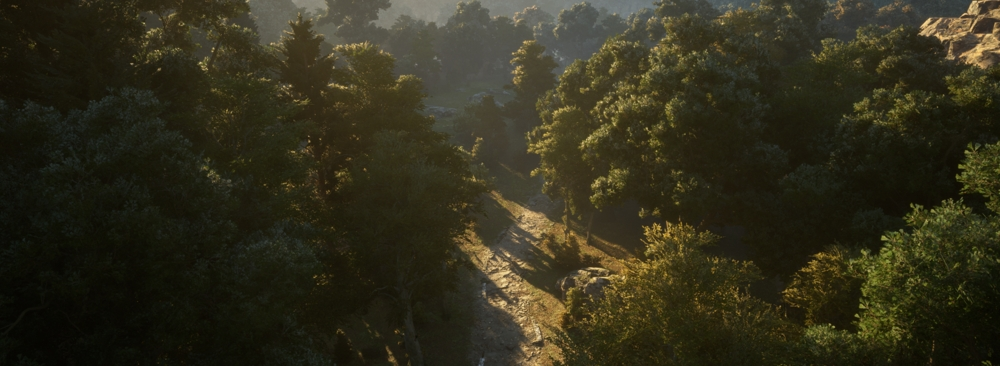
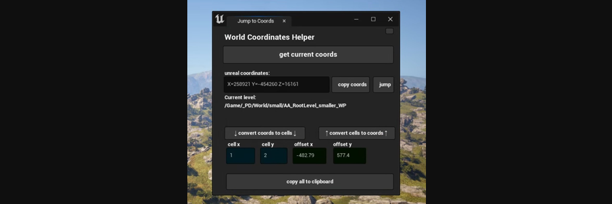

Pax Dei

Procedural world generation
foliage & asset scattering with houdini
- scattering algorithm & pipeline
- dynamic bridge placement
Houdini Engine & PCG
- using splines, polygons, etc
Unreal 5 developer tools
- world coordinates utility tool
foliage & asset scattering with houdini
- scattering algorithm & pipeline
- dynamic bridge placement
Houdini Engine & PCG
- using splines, polygons, etc
Unreal 5 developer tools
- world coordinates utility tool

- Asset identification tool

- hlods
- blueprints + python
user-friendly materials
- hierarchical foliage materials
- root deformation
- blueprints + python
user-friendly materials
- hierarchical foliage materials
- root deformation

Houdini utility tools
- p4 checkout, etc on shelf
Foliage impostors with accurate lighting